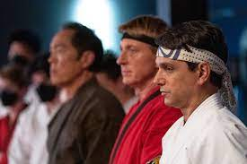
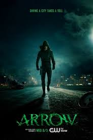
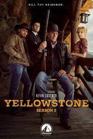

"Cobra Kai" apresenta uma nova geração de estudantes de karatê, cada um com suas próprias lutas e aspirações. Do desejo de Miguel de se tornar forte, à jornada de auto-descoberta de Samantha e à busca de Robbie por aceitação, a série habilmente entrelaça os temas de adolescência, identidade e pertencimento.
Arrow é uma série de TV norte-americana transmitida originalmente pelo canal The CW. A história apresenta o jovem bilionário, Oliver Queen, que é dado como morto após um grande naufrágio. Cinco anos depois, ele é encontrado com vida em uma remota ilha do oceano pacífico.
O cowboy John Dutton (Kevin Costner) comanda um rancho que está com sua família desde 1886. Ele enfrenta inimigos de olho em pedaços da imensa terra e precisa controlar seus quatro filhos problemáticos. Um deles será o herdeiro de tudo.
A série segue a vida de Ted Lasso (Jason Sudeikis), um técnico de futebol americano que se encontra em dificuldade quando se vê contratado para treinar um time de futebol, na Inglaterra, mesmo não tendo experiência suficiente com o esporte. A proprietária do time, Rebecca Walton (Hannah Waddingham), contrata o treinador propositalmente na expectativa que ele será um fracasso. Ela faz isso como forma de se vingar do ex-marido que a traiu e perdeu o time no processo de divórcio. Mesmo inexperiente, Ted conquista a equipe e, aos poucos, passa a entender as minúcias do futebol. Com a ajuda do Treinador Barba (Brendan Hunt), eles precisarão administrar os problemas do modesto AFC Richmond, clube fictício da Premier League.

Pela primeira vez na sua história, o FC Bayern Munique dá-nos acesso irrestrito ao balneário e aos bastidores deste clube de topo da série Amazon "Behind the Legend". O documentário de 6 partes cobre a temporada turbulenta após o triunfo na Liga dos Campeões em Lisboa, celebra as vitórias lendárias do passado e liga eventos importantes da história do Bayern à equipa atual.